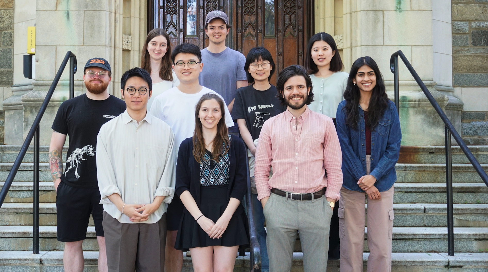

Our goal in PICoL is to understand the computational mechanisms that facilitate language learning and language processing in the human mind, and to use this knowledge to build intelligent and safe language technologies. To do so, we deploy a multidisciplinary toolkit including deep learning, statistical modeling, formal linguistic theories, and experimental psycholinguistics. PICoL was launched in fall 2024 and is housed in the Department of Linguistics at Georgetown. It is directed by Prof. Ethan Gotlieb Wilcox.